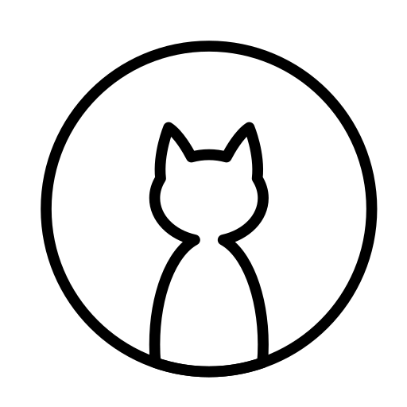

¿Cómo Doy en Adopción a Mi Mascota?
Dar en adopción una mascota es muy sencillo. Antes de comenzar, lee atentamente los siguientes pasos.

Primero deberás seleccionar alguna de tus mascotas registradas en la plataforma, o registrar una nueva, para empezar el proceso de darla en adopción.
Luego tendrás que responder una serie de preguntas, con información que servirá para poder otorgarle a tu mascota el mejor nuevo hogar posible.
Cuando aparezca algúna persona interesada en tu mascota, se te notificará para que puedas comunicarte con ella y finalizar la adopción.

Parece que no tienes usuario
Hemos notado que aún no has iniciado sesión o no te has registrado. Para poder dar en adopción a alguna de tus mascotas debes tener un usuario.